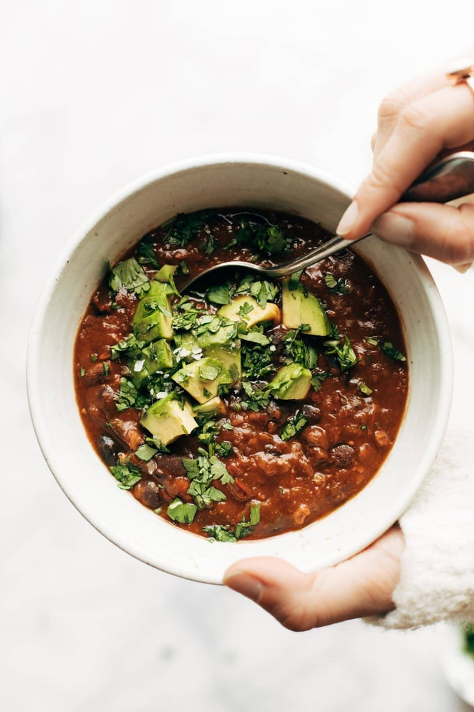

Pumpkin Chili

Your family will be sure to love the fall flavors of this ultra-comforting pumpkin chili.
Ingredients
- 28 ounce can fire-roasted tomatoes
- half an onion, minced
- 3 cloves garlic, minced
- 2 green chile peppers, chopped
- 2 chipotle peppers, chopped
- 1 cup bulgur
- 1 cup red lentils
- 2 tablespoons chile powder
- 1 tablespoon smoked paprika
- 1 tablespoon salt
- 6 cups water
- 14 ounce can pumpkin puree
- 3 14 ounce cans black beans
Steps
- Dump all Ingredients into Instant Pot, except for pumpkin puree and black beans
- Cook on high pressure for 30 minutes
- When time is up,release the pressure and stir in the beans and pumpkin